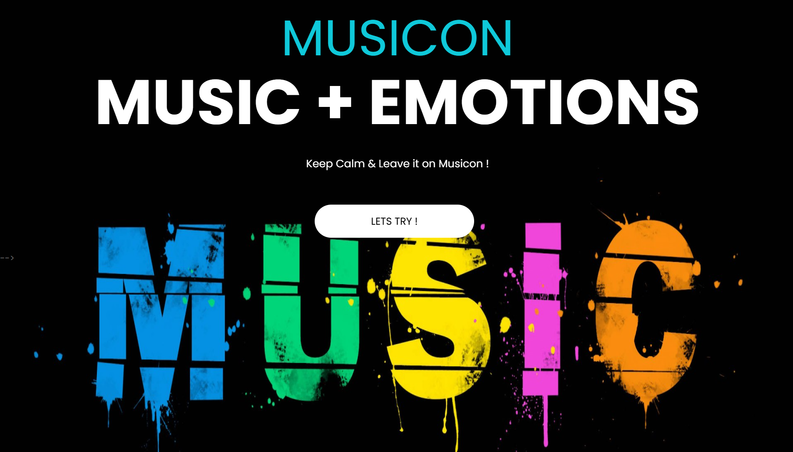
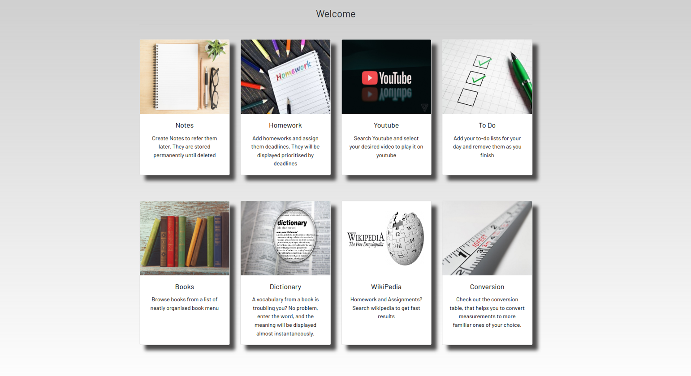
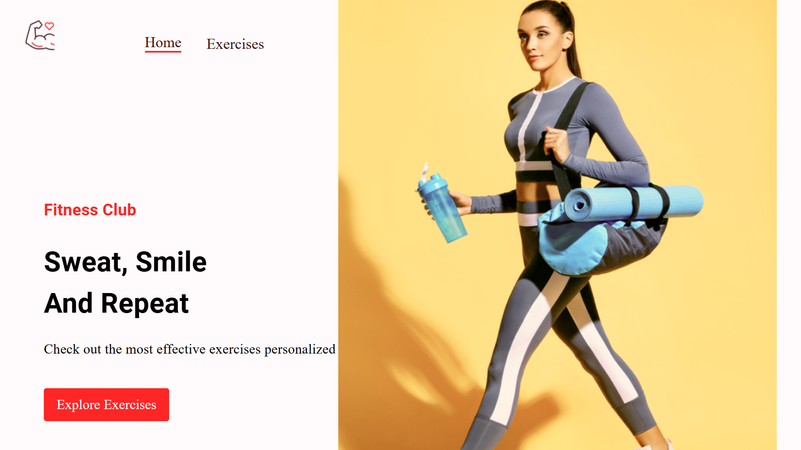

About Me
Hi 👋, I am a software engineer and data science enthusiast with a strong background in machine learning, data analytics, and web development. Currently pursuing BTech in Information Technology from RGPV Bhopal, with an expected graduation in 2025. Alongwith that pursuing BS in Data Science & Applications from IIT Madras.
I have interned at Ernst & Young and Netlink, where I gained hands-on experience in data analytics, software development, and business intelligence tools. My expertise includes:
- Languages: Python, JavaSE, C/C++, JavaScript(ES6+), Golang(Basics)
- Machine Learning: Linear Regression, Decision Trees, SVM, XGBoost
- Data Analytics & Visualization: Power BI, Tableau, Lumenore
- Web Development: Django, ReactJS, Flask
- Cloud Computing: AWS, GCP, Azure
I am passionate about solving complex problems using data-driven approaches and am always eager to collaborate on innovative projects. Feel free to reach out if you have opportunities in AI, ML, or software development!
News
- 2024.08.01 Started my role as a Teaching Assistant at IITM.
- 2024.07.17 Started my internship at Netlink as a Data Analyst Intern.
- 2024.04.15 Completed my internship at Ernst & Young Global Delivery Services as a Full Stack Developer Intern.
- 2024.04.10 Achieved the IBM Data Analyst Professional Certification.
Education
- B.S. in Data Science & Applications, IIT Madras, 2023 - Present
- B.Tech in Information Technology, RGPV Bhopal, 2021 - 2025
Work Experience
-
TA - Python, IITM, Aug 2024 -
Present
- As a TA for Python for Data Science at IITM, I assist students in understanding concepts and applying them to real-world data problems.
-
Data Analyst Intern, Netlink, July 2024 -
Oct 2024
- Analyzed data to generate insights and built Lumenore dashboards for real-time reporting and better decision-making.
-
Full Stack Developer Intern, EY GDS, Feb 2024 - Apr 2024
- Built and optimized web applications, improving UI and collaborating on feature development for better performance.
Selected Projects
- 
- Musicon
- 
-
Collaborative Study Portal
Built a platform for 500+ students to share notes, manage homework, and access an e-library.
[GitHub]
-

-
911 Calls Capstone Project
Analyzed 911 call data using Pandas, Matplotlib, and Seaborn to identify emergency call patterns.
[GitHub]
- 
- Fitness Exercises App